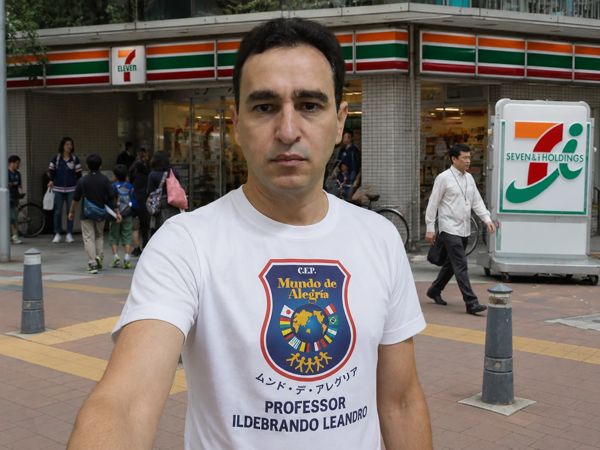

PROFESSOR • CRIADOR • PROFISSIONAL MULTIDISCIPLINAR
Movimento.
Estratégia.
Tecnologia.
Minha formação combina áreas que se complementam: a Educação Física aproxima pessoas e transforma por meio do movimento; a Administração organiza objetivos e recursos; o Marketing cria posicionamento e comunicação; e o desenvolvimento Front-end transforma ideias em experiências digitais. luso-brasileiro, com nacionalidade brasileira e portuguesa. Possuo duas certidões de nascimento, dois passaportes e duas identidades, além de aproximadamente 10 anos de vivência no Japão. Essa combinação ampliou minha visão sobre disciplina, cultura, organização, adaptação e inovação.
🇧🇷
CIDADANIABRASILEIRA
🇵🇹
CIDADANIAPORTUGUESA
DOIS PAÍSES.
UMA MISSÃO.
UMA MISSÃO.
PORTUGAL LIVE
--:--:--
BRAGANÇA • PORTUGAL
BRASIL 🇧🇷 • PORTUGAL 🇵🇹
10 ANOS DE VIVÊNCIA NO JAPÃO 🇯🇵
EDUCAÇÃO FÍSICA◆ADMINISTRAÇÃO◆MARKETING◆HTML◆CSS◆JAVASCRIPT◆FRONT-END◆EXPERIÊNCIA INTERNACIONAL◆
EDUCAÇÃO FÍSICA◆ADMINISTRAÇÃO◆MARKETING◆HTML◆CSS◆JAVASCRIPT◆FRONT-END◆EXPERIÊNCIA INTERNACIONAL◆
01 / SOBRE MIM
Educação física com visão global e mentalidade digital.
Minha formação combina áreas que se complementam: a Educação Física aproxima pessoas e transforma por meio do movimento; a Administração organiza objetivos e recursos; o Marketing cria posicionamento e comunicação; e o desenvolvimento Front-end transforma ideias em experiências digitais.
Tenho vivência internacional, incluindo aproximadamente 10 anos no Japão, além de ligação com Brasil e Portugal. Essa combinação ampliou minha visão sobre disciplina, cultura, organização, adaptação e inovação.
ILDEBRANDO LEANDRO
02 / FORMAÇÃO & COMPETÊNCIAS
Conhecimento que cruza disciplinas.
Educação Física
Licenciatura voltada à educação, esporte, atividade física e desenvolvimento humano.
EducaçãoEsporteMovimento
Administração
Bacharelado com visão de planejamento, estratégia, gestão, processos e resultados.
GestãoPlanejamentoEstratégia
Marketing
Formação tecnológica aplicada à comunicação, posicionamento, conteúdo e presença digital.
MarcaSEODigital
Front-end
Criação de sites responsivos e experiências web utilizando HTML, CSS e JavaScript.
HTMLCSSJavaScript
03 / EXPERIÊNCIA INTERNACIONAL
Brasil. Japão. Portugal.
Três referências culturais que fazem parte da minha trajetória e da maneira como penso educação, pessoas, disciplina e tecnologia.
BR
🇧🇷Brasil
Minha origem, formação profissional e base da minha identidade como educador.
JP
🇯🇵Japão
Uma década de vivência que trouxe disciplina, adaptação cultural e perspectiva internacional.
PT
🇵🇹Portugal
Cidadania portuguesa e uma nova dimensão da minha trajetória pessoal e internacional.

TÓQUIO • JAPÃO
VIVÊNCIA NO JAPÃO
Dez anos que mudaram minha forma de enxergar o mundo.
A experiência no Japão está entre os capítulos mais importantes da minha trajetória. Foi um período de convivência com outra cultura, outros códigos sociais e uma forte cultura de organização, respeito e responsabilidade coletiva.
Essa vivência hoje se conecta diretamente ao meu trabalho como professor e à minha curiosidade por inovação e tecnologia.
TRAJETÓRIA
Disciplina, história e identidade.
Dois registros que fazem parte da minha trajetória pessoal, apresentados em destaque no site.
04 / GALERIA
Minha trajetória em imagens.
Clique em uma fotografia para ampliar. Use as setas para avançar ou voltar.
MINHA ESSÊNCIA
“Movimento cria energia.
Estratégia cria direção.
Tecnologia amplia possibilidades.”
05 / ENTRE EM CONTATO
Vamos conversar?
Projetos educacionais, atividade física, desenvolvimento de sites, presença digital, marketing ou novas parcerias.